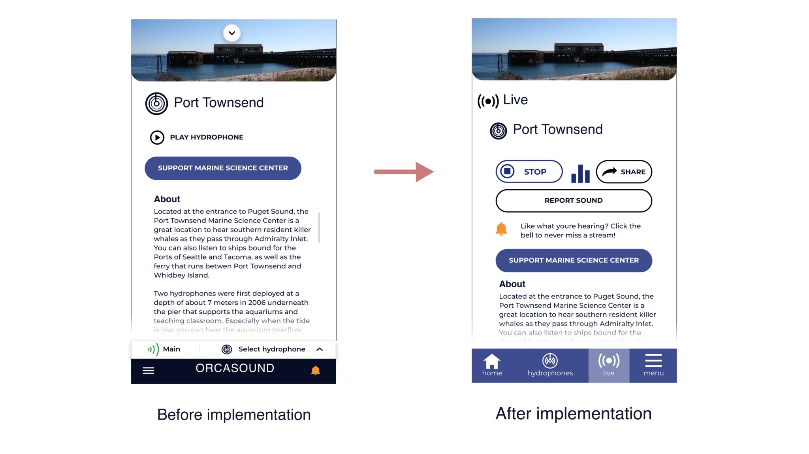
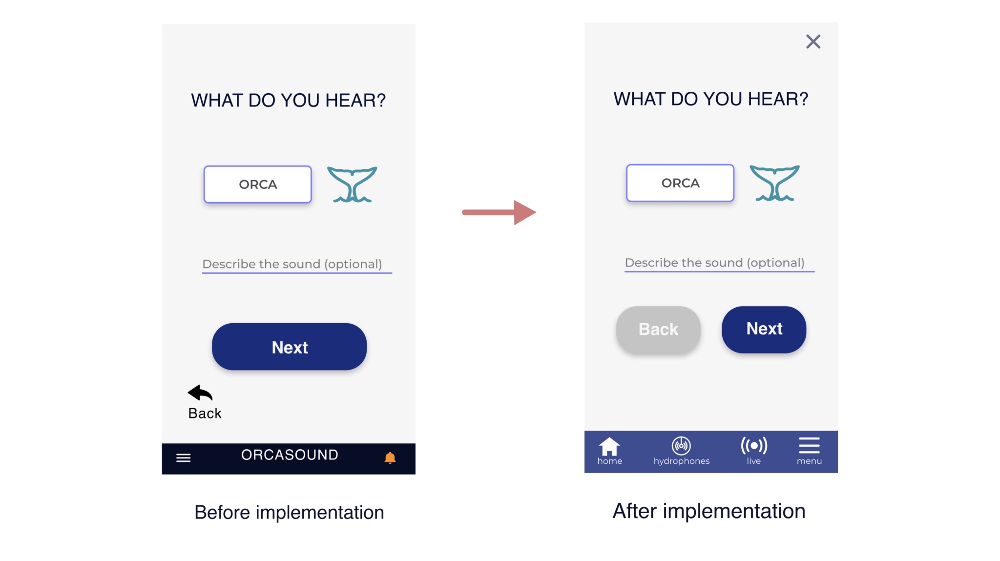
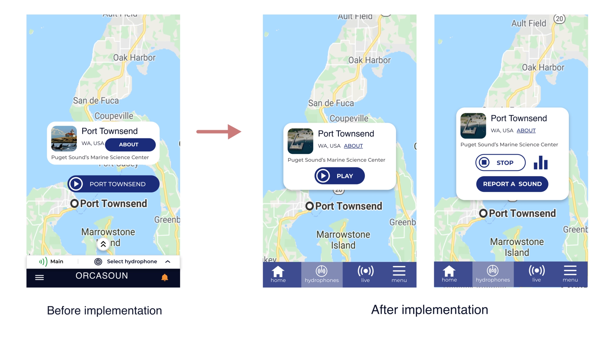
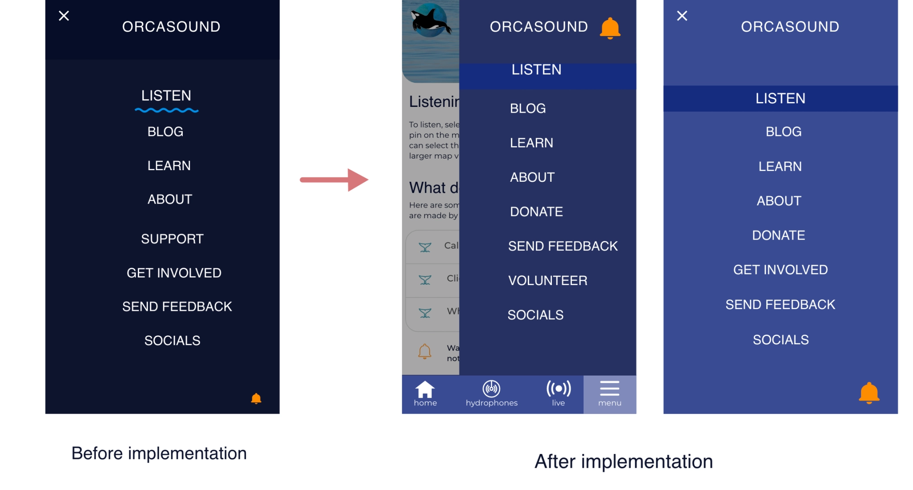
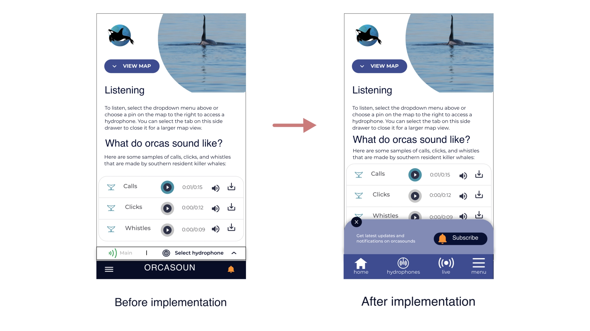
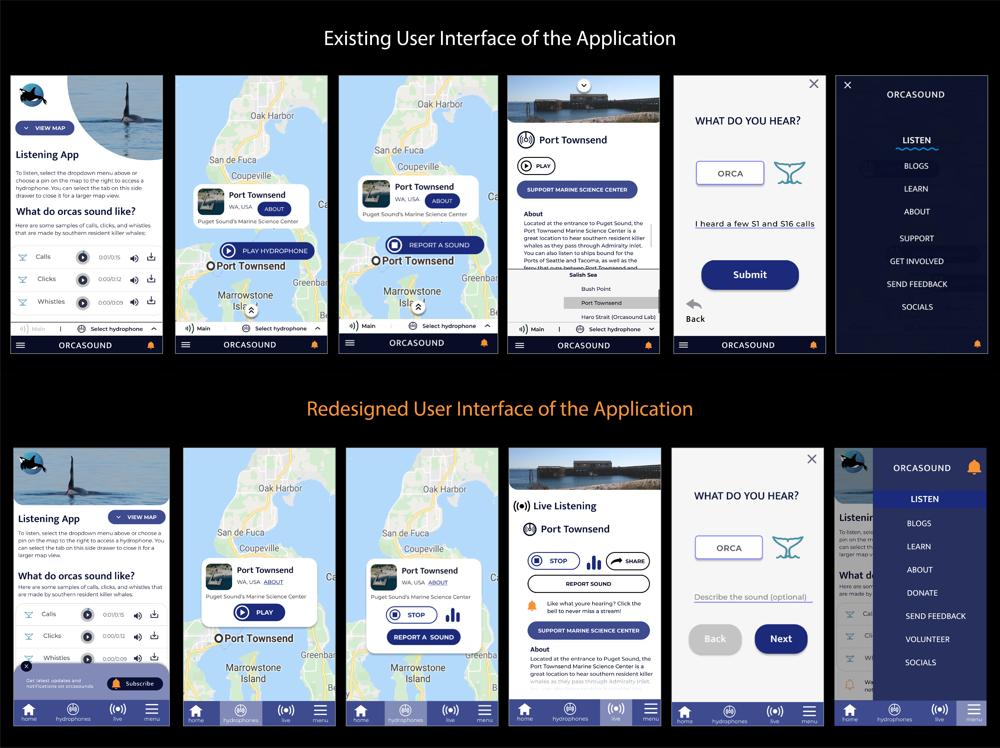

Orcasound — Mobile Application Design
Open-source marine conservation initiative — improving the mobile reporting experience for orca sound observations and marine activity data.
Project Overview
Orcasound is an open-source marine conservation initiative that uses live underwater audio streams to help monitor and protect orcas. The platform brings together a global community of designers, developers, researchers, and marine scientists to create accessible tools that support environmental awareness and citizen science. As part of this collaborative initiative, I contributed as a UX designer focused on improving the mobile reporting experience through wireframing, prototyping, usability testing, and iterative design improvements.
Methods: Wireframing, Prototyping, Usability Testing, UX Improvements
Tools: Figma, Prototyping
Team: Designers, Developers, Marine Researchers, Stakeholders, project managers.
Duration: 6 months
My Role
As part of a small UX team, I collaborated closely with designers and contributors during the wireframing and prototyping phase to optimize the orca sound reporting experience.
My contributions included:
- Designing wireframes and interaction flows
- Supporting mobile UI improvements
- Conducting usability testing sessions
- Gathering and analyzing user feedback
- Iterating designs based on research insights
- Presenting usability findings and recommendations to stakeholders and community meetings.
Challenges & Solutions
The Orcasound mobile experience needed a more intuitive and user-friendly reporting workflow for users interacting with orca sound observations and marine activity data. Since the platform supported a broad community of users with different levels of technical familiarity, the reporting flow needed to be simple, accessible, and easy to navigate on mobile devices.
The design team focused on improving
- Reporting flow clarity
- Navigation consistency
- User interaction simplicity
- Task completion efficiency
- Mobile usability
Design Process
Understanding the Existing Experience
Before creating design improvements, our team reviewed the existing reporting workflow to identify usability gaps and friction points within the mobile experience. We focused on understanding:
How users completed reporting tasks, Areas where navigation became confusing, Interaction patterns causing hesitation or drop-off, Opportunities to simplify the overall workflow
This helped establish a clearer direction for improving the reporting experience.
Wireframing & Prototyping
During the early design phase, I worked with the design team to explore multiple wireframe concepts focused on simplifying the reporting process and improving information hierarchy. The goal was to create: Cleaner navigation patterns, Better task visibility, More intuitive interaction flows, Reduced cognitive load for users
Through iterative prototyping, the team refined the mobile workflow and validated design decisions before usability testing.
Usability Testing
To evaluate the effectiveness of the proposed designs, we conducted two rounds of usability testing with participants. The usability studies helped identify several improvement areas, including:
Difficulty locating reporting actions , Confusing navigation patterns, Unclear information hierarchy, Friction during task completion
Based on participant feedback, we refined the interface and simplified several interaction patterns to improve usability and accessibility.
Iterative Improvements
Using the usability findings, the design team implemented improvements focused on:
Simplifying reporting workflows, Improving screen organization, Enhancing navigation clarity, Reducing unnecessary user steps, Making actions more discoverable
The iterative design process helped create a smoother and more user-friendly reporting experience for mobile users.
Before and after improvement screens:
Here is the screens that I have implemented according to the usability studies feedback and the





Impact
The updated designs contributed to measurable usability improvements during testing sessions
Key Outcomes: Conducted 2 rounds of usability testing, Improved task completion rates by 15%, Strengthened user-centered decision making through research insights, Helped align stakeholders around usability-focused enhancements
I also presented usability findings and design recommendations to stakeholders, helping drive alignment toward user-centered design decisions across the project team.
Reflection
This project strengthened my understanding of collaborative open-source design workflows and reinforced the importance of usability testing in shaping better user experiences. Working alongside global contributors allowed me to gain experience in:
Cross-functional collaboration, Research-driven design iteration, Stakeholder communication, Designing for mission-driven communities
The experience also deepened my appreciation for how thoughtful UX design can support environmental and conservation-focused technology initiatives.

Final Takeaway
The Orcasound project demonstrated how usability research and iterative design improvements can create more accessible and effective experiences within open-source conservation platforms.
By combining collaboration, testing, and user-centered design thinking, the team was able to improve the reporting experience while supporting a larger mission focused on marine conservation and public engagement.